Ana Lopez
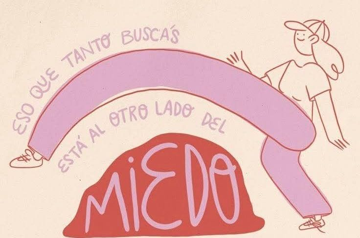Sobre mí
¡Hola! Soy Ana López, una apasionada del diseño gráfico enfocada en crear proyectos visuales llenos de creatividad, color y significado. Me especializo en invitaciones,ilustraciones,animaciones y fotografia, cuidando cada detalle para que cada diseño y fotografia cuente una historia única. Mi objetivo es conectar con las personas a través de imágenes que transmitan emociones y dejen huella.
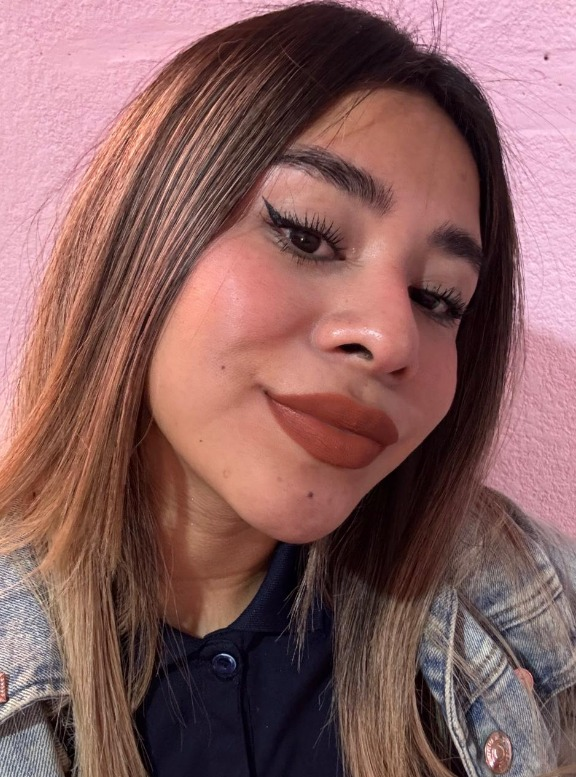Mis Invitaciones
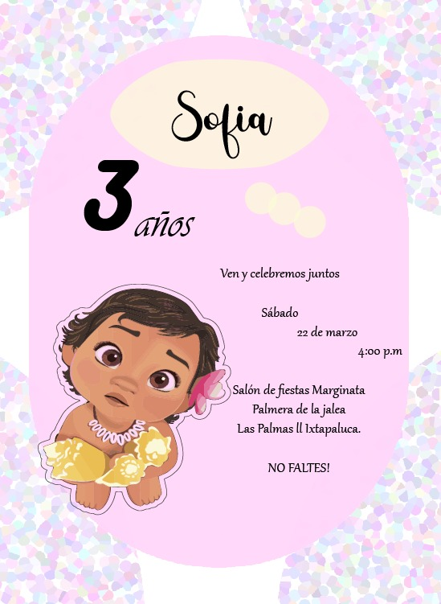
 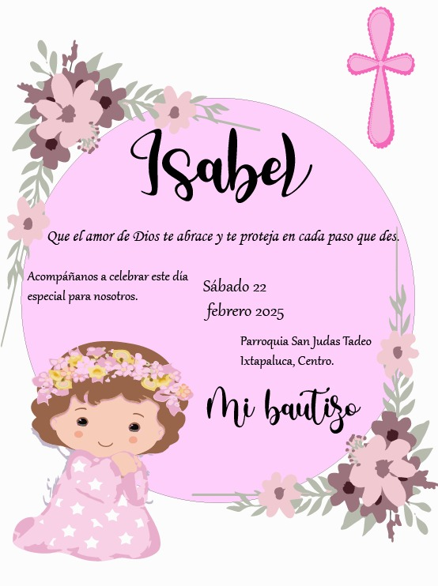
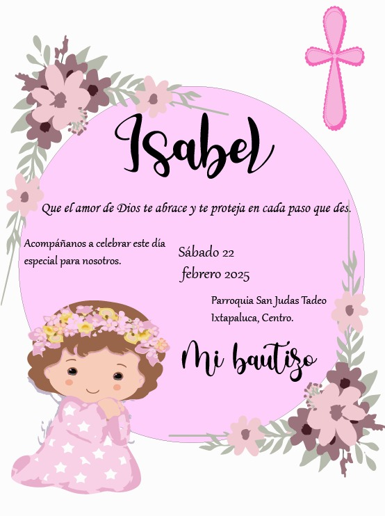
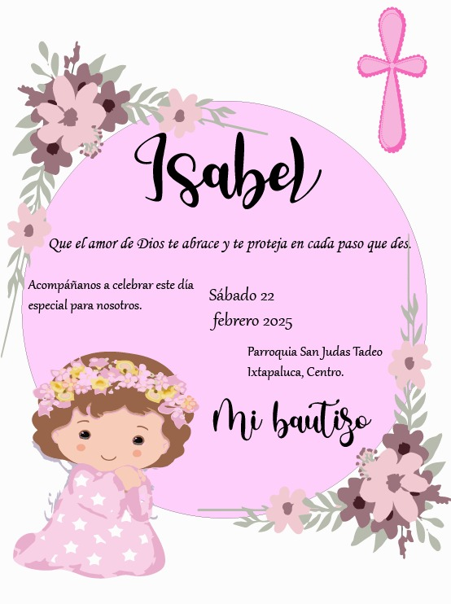
Mis Ilustraciones
 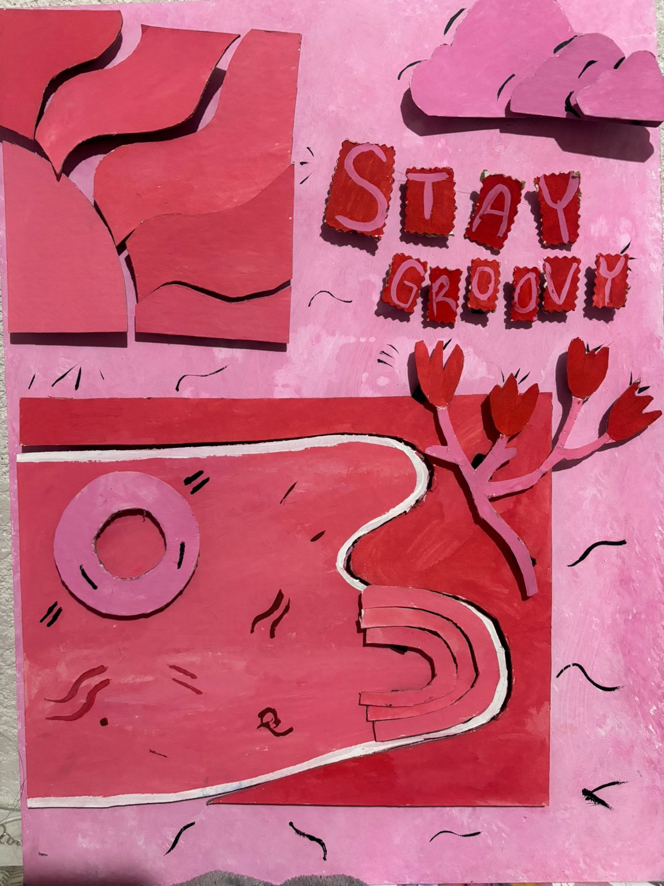
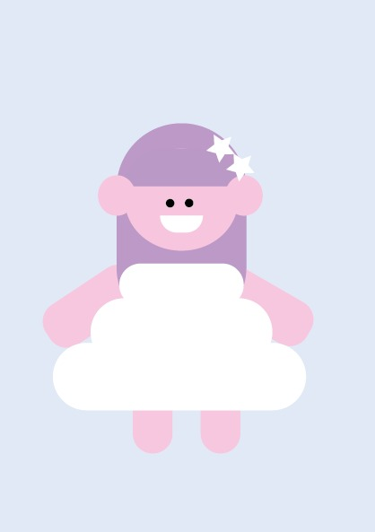
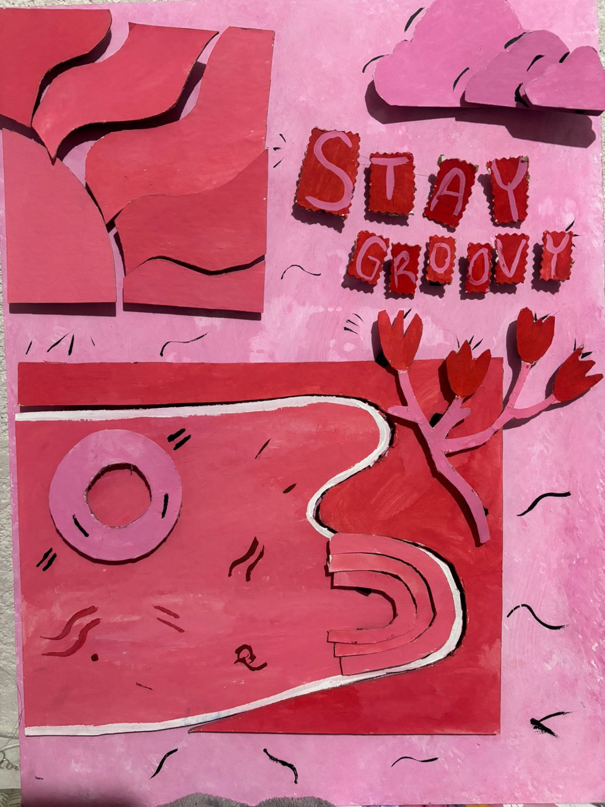
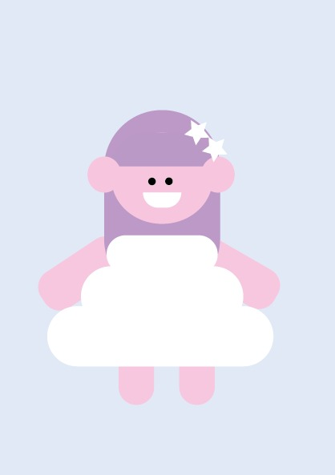
Mis Animaciones
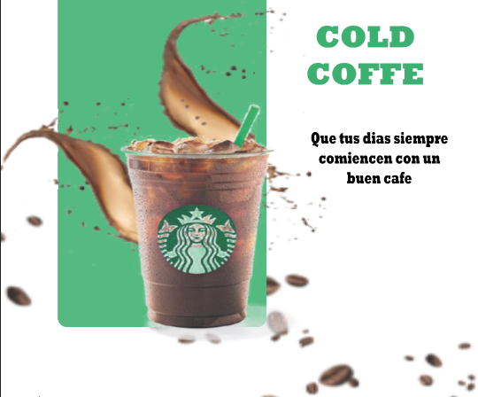
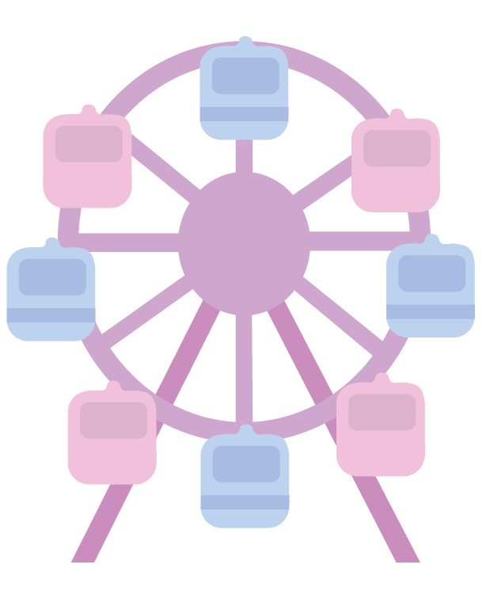
Contactos
Puedes comunicarte conmigo a través de mis redes sociales o correo.